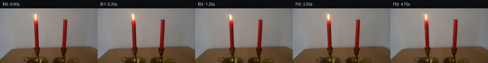
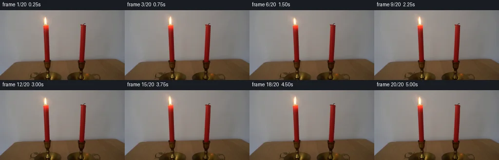
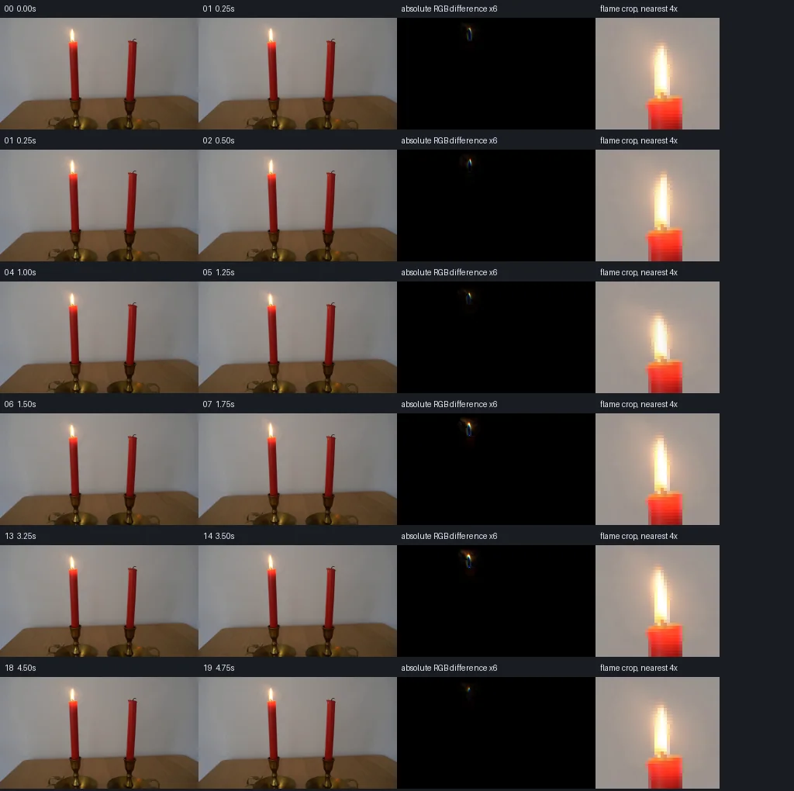

V0 · 初版 · 最终提交
![]()
Observable Generation Trace
把最终像素视频、Harness 冻结的每轮候选、真实工具事件和 Agent 自述放在同一页。可观测证据与模型自述分开标记，避免把“模型说它检查过”误当成真实工具调用。
![首帧]()
Static locked-off single-shot with fixed frame throughout filmed with constant framerate in real-time. The scene shows a realistic scientific demonstration. The scene only contains the described setup and actions. Two red candles are attached to two candle holders that sit on a wooden table. The left candle is burning.
首帧显示在左侧播放器初始画面。Track 权限、隔离和 tensor 一致性来自 run manifest，而不是 METHOD.md。
默认勾选初版和最终版；可选其他版本一起同步播放。仅检查图更新的连续重复快照已合并，回退旧视频仍保留为一次修订。
Observable events
来源：events.jsonl + run manifest
此 Track 禁止读取输出图片。逐轮预览由外部 Harness 自动冻结，只用于事后审计，生成 Agent 当时看不到这些页面。
Frozen candidates
每张图来自该 round 的真实 00 / 01 / 05 / 10 / 19 帧

pixels 5ec0b871cc5c61c2 · code 326e5021d555abcb
--- previous/generate.py +++ current/generate.py @@ -0,0 +1,193 @@ +"""A photographic, anchored RGB-residual warp for a flickering candle. + +Reads only first_frame.png and prompt.txt as scene inputs. No image-view, +network, learned models, external assets, or rendering engines are used. +""" +from pathlib import Path +import json +import numpy as np +from PIL import Image, ImageDraw +from scipy.ndimage import map_coordinates, gaussian_filter1d +import artifact_io + +ROOT = Path(__file__).resolve().parent +HEIGHT, WIDTH = 144, 256 + +# Samples of a mild, irregular flicker, tied to the prewritten event plan. +# Geometry is in original-image pixel units; attachment remains fixed. +LEAN = np.array([0, .40, .95, .30, -.15, -.90, -.70, -.25, 0, + .90, .55, .10, -.65, -.95, -.65, -.10, .60, .95, .55, .20]) +LENGTH = np.array([1, 1.045, 1.08, 1.015, .945, .905, .985, 1.10, 1.05, + 1.025, 1, .93, .915, .99, 1.12, 1.07, 1.01, 1.07, .98, 1.015]) +WIDTH_SCALE = np.array([1, .99, .95, 1, 1.045, 1.07, 1.025, .95, .985, + .96, 1, 1.055, 1.07, 1.01, .93, .965, 1, .95, 1.025, 1]) +BRIGHTNESS = np.array([0, .009, .016, .001, -.019, -.031, -.012, .017, .024, + .014, -.004, -.025, -.032, -.006, .023, .025, .006, .017, + -.010, .004]) + + +def smoothstep(lo, hi, x): + t = np.clip((x - lo) / (hi - lo), 0, 1) + return t * t * (3 - 2 * t) + + +def prepare_source(original): + y, x = np.mgrid[:HEIGHT, :WIDTH].astype(np.float64) + # Estimate the under-flame wall from same-row samples on either side. + # These samples retain some broad glow, which avoids a hard dark surround. + left = np.mean(original[:, 75:80], axis=1) + right = np.mean(original[:, 108:113], axis=1) + left = gaussian_filter1d(left, .8, axis=0) + right = gaussian_filter1d(right, .8, axis=0) + fraction = np.clip((x - 77) / 33, 0, 1) + backdrop = left[:, None, :] * (1 - fraction[..., None]) + backdrop += right[:, None, :] * fraction[..., None] + # Compact support, including all white/yellow flame pixels and inner halo. + # Source stops before the solid red candle; lower flame pixels are anchored. + mask = (smoothstep(77, 83, x) * (1 - smoothstep(104, 111, x)) + * smoothstep(5, 11, y) * (1 - smoothstep(30, 31, y))) + residual = (original - backdrop) * mask[..., None] + residual[np.abs(residual) < .2] = 0 + # Additional weak light modulation in the photographed halo. + halo = np.exp(-.5 * (((x - 93) / 11) ** 2 + ((y - 23) / 13) ** 2)) + halo *= (smoothstep(70, 77, x) * (1 - smoothstep(109, 118, x)) + * (1 - smoothstep(43, 51, y))) + # Only red wax near the lit end responds to the slight light change. + wax = ((x > 86) & (x < 104) & (y >= 31) & (y < 49) + & (original[..., 0] > 1.65 * original[..., 1])) + wax_weight = wax * np.exp(-((y - 32) / 10) ** 2) + return x, y, residual, halo, wax_weight + + +def make_frames(original): + source = original.astype(np.float64) + x, y, residual, halo, wax = prepare_source(source) + frames = [original.copy()] + attachment_x, attachment_y = 93.3, 30.3 + metrics = [] + for frame in range(1, 20): + # Convection-inspired shape deformation, with an immobile lower end. + elevation = np.clip((attachment_y - y) / 17.3, 0, 1.5) + sway = LEAN[frame] * elevation ** 1.35 + bend = (.18 * np.sin(frame * .91 + elevation * 4.1) + * np.sin(np.pi * np.clip(elevation, 0, 1))) + local_width = 1 + (WIDTH_SCALE[frame] - 1) * np.minimum(elevation, 1) + sample_y = attachment_y - (attachment_y - y) / LENGTH[frame] + sample_x = attachment_x + (x - attachment_x - sway - bend) / local_width + warped = np.stack([ + map_coordinates(residual[..., channel], [sample_y, sample_x], + order=1, mode='constant', cval=0, prefilter=False) + for channel in range(3) + ], axis=-1) + # The tiny light variation affects the luminous excess, not exposure. + moved = warped * (1 + BRIGHTNESS[frame]) + output = source + moved - residual + output += halo[..., None] * BRIGHTNESS[frame] * np.array([43, 18, 5]) + output += wax[..., None] * BRIGHTNESS[frame] * np.array([65, 22, 8]) + # Preserve the solid objects. Vertical warp can interpolate at the … diff truncated; 106 more lines …
pixels 5ec0b871cc5c61c2 · code 857b5de8caf7001e
--- previous/generate.py
+++ current/generate.py
@@ -4,7 +4,9 @@
network, learned models, external assets, or rendering engines are used.
"""
from pathlib import Path
+import base64
import json
+import shutil
import numpy as np
from PIL import Image, ImageDraw
from scipy.ndimage import map_coordinates, gaussian_filter1d
@@ -128,6 +130,7 @@
assert tensor.shape == (HEIGHT, WIDTH, 20)
assert np.all(tensor <= 0xFFFFFF)
assert np.array_equal(frames[0], np.array(Image.open(ROOT / 'first_frame.png')))
+ assert (ROOT / 'frames' / '00.png').read_bytes() == (ROOT / 'first_frame.png').read_bytes()
png_checks = []
for frame in range(20):
png = np.array(Image.open(ROOT / 'frames' / f'{frame:02d}.png'))
@@ -138,6 +141,24 @@
assert np.array_equal(png, unpacked)
assert np.array_equal(png, frames[frame])
png_checks.append(True)
+ # Decode the standalone player's embedded packets independently.
+ html = (ROOT / 'index.html').read_text()
+ player = json.loads(html.split('const DATA=', 1)[1].split(';\nfunction unpack', 1)[0])
+ decode = lambda packet: np.frombuffer(base64.b64decode(packet), dtype='<u4')
+ playback = decode(player['first']).copy()
+ assert np.array_equal(playback.reshape(HEIGHT, WIDTH), tensor[..., 0])
+ assert len(player['deltas']) == 19 and '},250)' in html
+ for frame, encoded in enumerate(player['deltas'], start=1):
+ packet = decode(encoded)
+ cursor = 0
+ while cursor < len(packet):
+ start, count = map(int, packet[cursor:cursor + 2])
+ cursor += 2
+ assert 0 <= start < WIDTH * HEIGHT and start + count <= WIDTH * HEIGHT
+ assert cursor + count <= len(packet)
+ playback[start:start + count] = packet[cursor:cursor + count]
+ cursor += count
+ assert np.array_equal(playback.reshape(HEIGHT, WIDTH), tensor[..., frame])
# All motion is local to the left flame/glow, with no camera or scene drift.
y, x = np.mgrid[:HEIGHT, :WIDTH]
allowed = (x >= 70) & (x < 118) & (y < 51)
@@ -167,6 +188,7 @@
'duration_seconds': 5, 'tensor_shape': list(tensor.shape),
'tensor_dtype': str(tensor.dtype), 'packing': '0xRRGGBB',
'frame_00_exact': True, 'all_pngs_equal_tensor': all(png_checks),
+ 'frame_00_file_bytes_exact': True, 'html_player_frames_equal_tensor': True,
'right_candle_static': True, 'table_holders_and_background_static_outside_local_glow': True,
'inspection_method': 'numeric RGB only; images generated but not viewed',
'motion_parameters': motion, 'transition_statistics': statistics}
@@ -185,6 +207,7 @@
assert original.shape == (HEIGHT, WIDTH, 3)
frames, motion = make_frames(original)
artifact_io.save(frames, ROOT)
+ shutil.copyfile(ROOT / 'first_frame.png', ROOT / 'frames' / '00.png')
transition_sheet(frames)
verify(frames, motion)
Final visual checks
Harness 保存的最终产物


Agent claims
以下文字由生成 Agent 撰写，不等同于工具证据
Input inspection used local Pillow/NumPy loading, numeric RGB samples, thresholded colour runs, and text colour maps. No image Read/View tool or image display was used. Coordinates below use the 256 × 144 image with (0,0) at top left.
Only the left candle is described as burning. Over five seconds it continues burning with mild convection-driven flicker. There is no added lighting action, smoke plume, hand, camera motion, or interaction. Candle consumption over five seconds is below a pixel and is left geometrically unchanged. The right candle stays unlit. The fixed photo supplies all object and background detail.
Use a locally estimated smooth background below the flame, isolate the flame's signed RGB excess, then apply a continuous inverse warp to that excess. The flame's lower attachment remains fixed while its upper part sways, lengthens, and narrows. Blend a tiny brightness change into its preexisting warm halo and nearby wax highlight. All other pixels remain exact copies. Frame 00 bypasses processing and equals the input exactly.
Times are frame start times at 4 fps; each frame is displayed for 0.25 s. Height and width below are qualitative targets relative to the initial flame. Lean refers to upper-flame motion; its attachment is fixed. Smooth deterministic functions will interpolate these variations, without discrete flame replacements.
| Frame | Time (s) | Flame event |
|---|---|---|
| 00 | 0.00 | Exact supplied input, upright flame. |
| 01 | 0.25 | Very small lean right, slightly taller, same bright core. |
| 02 | 0.50 | Lean right about one pixel, modest narrowing. |
| 03 | 0.75 | Ease toward centre, height near original. |
| 04 | 1.00 | Slightly shorter and broader flame. |
| 05 | 1.25 | Small lean left, shortened tip, gentle dimming. |
| 06 | 1.50 | Recover height while remaining slightly left. |
| 07 | 1.75 | Taller tip, lean moving back to centre. |
| 08 | 2.00 | Near upright, softly brighter. |
| 09 | 2.25 | Mild right lean and narrowing. |
| 10 | 2.50 | Right lean eases, original-sized flame. |
| 11 | 2.75 | Tip briefly contracts and broadens. |
| 12 | 3.00 | Slight left lean with a lower tip. |
| 13 | 3.25 | Height recovers; rim remains warm. |
| 14 | 3.50 | Taller, slender flame with small left lean. |
| 15 | 3.75 | Return toward upright; glow increases slightly. |
| 16 | 4.00 | Small lean right, height near original. |
| 17 | 4.25 | Slight narrowing and gentle tip extension. |
| 18 | 4.50 | Ease right lean, subtle contraction. |
| 19 | 4.75 | Continue steady burning with minor flicker; no final event. |
Planned upper-flame displacements remain within about ±1.3 px horizontally and ±2.5 px vertically. Width variations stay within about 10%. Brightness and halo changes remain modest. Numeric validation will check dimensions, packing, exact frame 00, fixed scene regions, dynamic bounds, and temporal difference statistics. Inspection and transition sheets are deliverables, without a claim of visual review.
The continuation consists of 20 RGB frames at 256 × 144, displayed at 4 fps for five seconds. The photographed scene stays fixed while the left candle flame gently flickers. The right candle remains unlit. The flame motion is an artistic, deterministic approximation of natural candle flicker using pixel warping and local light modulation.
The source image was loaded locally using Pillow and NumPy. Measurements came from RGB values, row-wise colour thresholds, and text colour classifications. No image Read/View tools were used, and no visual review is claimed. OBSERVATION.md records these measurements and the frame-by-frame event plan written before the generator.
first_frame.png, preserving both its decoded RGB pixels and PNG file bytes.The generator uses local NumPy/Pillow pixel arithmetic and SciPy interpolation/filtering. It uses the supplied output helper for serialization and the supplied HTML player template. All scene appearance comes from the provided photograph. This is a source-image residual deformation, with explicit hand-selected flicker parameters; no fluid simulation or learned image/video model was used.
generate.py: reproducible generator, artifact creation, and validation.pixels.npz: uint32 array under the key pixels, shape (144,256,20); each value is packed as 0xRRGGBB.frames/00.png through frames/19.png: all 20 RGB frames.inspection.png: eight representative full frames in the supplied contact-sheet format.transition_check.png: six pairs of adjacent frames, their absolute RGB differences amplified six times, and enlarged flame crops.index.html: standalone player with embedded first-frame pixels and 19 delta packets, using a 250 ms playback interval.OBSERVATION.md: numeric observations and the prior event plan.validation.json: recorded parameters and numeric verification results.Run python generate.py from this workspace to regenerate the sequence and its checks. The checks reload every PNG and compare it exactly with the unpacked uint32 tensor. They check frame 00 against the source pixels and file bytes, independently decode all HTML player packets, confirm the 20-frame/4-fps dimensions, and assert that the right candle and table/holders stay pixel-identical.
Across adjacent frames, 585–937 pixels change, mainly in the flame's soft glow. Mean absolute RGB differences over the full frame range from about 0.019 to 0.065 channel levels. The bright flame core contains 65–81 pixels, and its bright tip moves between y=13 and y=16. These measurements show localized, mild temporal changes and preserved scene registration. Inspection sheets were generated for later viewing; this run assessed them numerically only. Browser playback was validated through its embedded packet data and timing code rather than a browser session.